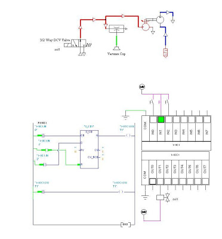

derp
Why not just make it a lose wire or something Gordon has to fix?
It would definitely make more sense…
Gordon is only good at pressing large, flashy buttons, you know, being a scientist and all…
fixing a wire would be completely against the HL style. Not gonna happen.
It does fit with HL2 style though… Pick up large power conduit and stick oversized plug in oversized socket and hey presto wiring problem solved.
Didn’t think of that… 
Although I do think this “issue” has already been adressed by the devs, and I believe they have come up with something good and we’ll just have to wait and see.
If this section of the game hasn’t been thought out yet, I’d be quite worried.
Okay how about this: Gordon still has to go under the fan, but not to turn on a proper switch, but rather to fix something that shouldn’t have been there in the first place. Let’s say something is blocking some kind of equipment and he has to break a box or something, like the water pump at another point, I think it was in Power Up.
So the fan would have some safe switch somewhere, you’d have to turn that on, but the fan still won’t work, so you have to climb down and get rid of something that’s causing a malfunction. It would make sense.
IIRC Raminator said this section was already designed months ago, but i don’t remember when exactly he said this.
That would raise the question: Why was that box there in the first place. That makes less sense to me than some button under a fan.
It could be a headcrab that teleported inside the machinery and you have to lever its mangled corpse out with the crowbar to get it working again.
That’d only work if it’s dr. Breen, and it has to remain cannon.
I vote for putting a giant ice cube in the shaft and gordan has to climb up it with his hands and FEET.
The portion of the big flow tunnel is thinner than the rest of it. Therefore it works as a Venturi’s tube. And as follows: the drop of the pressure is to be derived combining Bernoulli’s principle and equation of continuity. So what actually is nonsense in original HL1 is the possibility to climb into the side vent as the air should be sucked from it.
Also someone mentioned that getting further from the fan should cause decrease in speed thus resulting in somewhat soft landing on the grate at the top. Wrong again, the air goes helluva faster there. It should squeeze Gordon through the grating. I have no idea what the devs came up with but I hope it will not cause me a “physical” heart attack.
I think the switch should be on the fan.
I already mentioned that in my post at page 7.
It’s not possible for Gordan to go through the vent as the suction would be far too strong.
Yes, okay, then not a box, but why not some damage from an explosion of some kind, there are plenty of random structural damages in Black Mesa so it would make sense. Lets say a huge metal pipe fell onto the fan, blocking the blades, and you would have to do something to get the pipe away from the blades. Or there would be a dead repairs man below the fan, and you could see that he was about to put a cog wheel into some gear box below the fan just before he died (Episode 2 had a similar concept in the mine), and all you would have to do is pick up the cog with Use and just place it into the gear box. I mean I’m sure there are loads of possible reasons Gordon would have to go under such a dangerous fan, but having a proper switch right there is stupid, since the wires could have easily been brought up to a safer location. There’s no reason for the switch to be located there. There has to be something more mechanical there, that requires the player to go down the maintenance ladder, and that makes some sense.
By the way the entire fan thing is unrealistic, you’ve probably seen those huge fans that people use to have fun with, you dress up in this protective suit and jump onto the fan and you can fly right above it. Now let’s imagine that the fan is 10 times more powerful than that, the way you would fly would be completely uncontrollable and you would probably end up falling down on the sides or something. It would probably not bring you so high either, and then there would probably not be some small vent at the end to collect all that pressure anyway. The vent would be the size of the fan at least, and it would have to branch out into many smaller vents, as I imagine that such a huge fan has to feed many vents in the building and not just one normal sized one. But if Gordon just has to fly like that, then at least something has to be done to make it less stupid.
What if there were loads of vents in the walls of that ventilation shaft, not just at the top, and the player would just have to climb into one of those, and you would only need a smaller boost from the fan? It could even add difficulty as some of the vents could lead nowhere, some to bonus ammo rooms, etc…
Well… it would actually suck him in so it WOULD be possible for him to go through, the only problem would be that he would not be able to control it and would probably end up smashed against some vent bars or something. The suction is going from the outside of the vent towards the inside, which is exactly where Gordon wants to go, so that’s still fine. Remember that the fan is pushing Gordon upwards, so the air is moving upwards, towards the inside of the vent, which is what we want.
That’s assuming that the entire fan duct terminates in a single air vent. If the vent we want to exit via is on the side of the duct, but the airflow continues past it to whatever else it may be going to, then we would have the reverse of what you’re describing there…
No, the suction is going the opposite way.
Observe:

The air pressure go through the dual flow control valve with the vacuum pump attached in the middle of the dual flow control valve creating a suction.
Edit: I don’t expect you to understand pneumatics but that’s how you create a suction.
Right… and the lower ones lead to the eventual upper vent?
or do they all just dump you at different levels into the same room